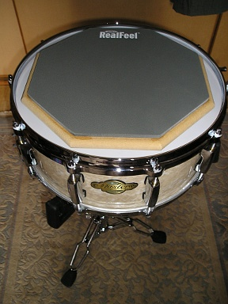
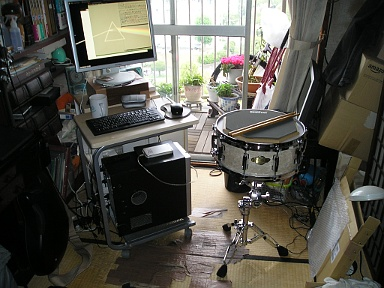
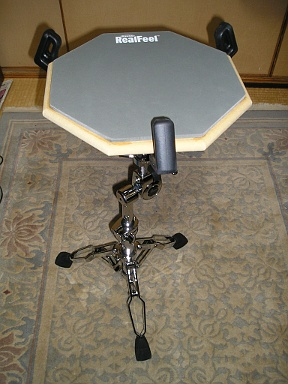

2012 年
04 月 25 日 ( 水 )
EVANS RealFeel
またなんか来た。

なぜそれを組み立てる？

だからなぜセッティングを？

なるほどっ！！

ちなみに、こんな団地の一室で 17 時ごろ叩いてもまったく音量的に問題なし。コーナンで買った発泡ラバーゴムより静かで、ニヤニヤしてしまう。

試しにスネアを取り除いてスタンドに直接 RealFeel を乗せてみた。

こちらの方がうるさい感じ。RealFeel のベースになっている木がカパカパ鳴ってしまう。スネアに乗せた方が静かなのが意外。スネアのヘッドが振動を吸収するためかも。
- Category :
- EVANS RealFeel
- Drums